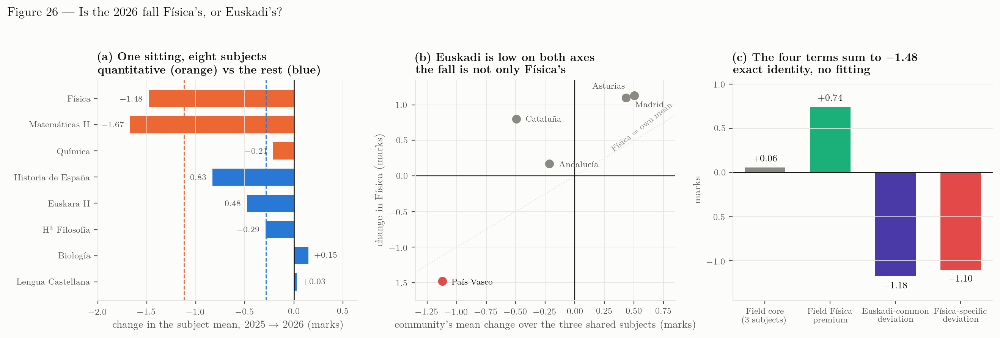

Synthesis for the coordination
PAU Física, UPV/EHU: the ground, the diagnosis, the interpretation, and what follows for 2027 — for the admissions office and for the Bachillerato physics teachers
What happened. The Basque Física mean fell to 3.99 in June 2026, from 5.47 in 2025 and 6.09 in 2024. It is the lowest value in the sixteen-year series and the second consecutive fall.
How much of it is ours. Measured against the nine communities that have published a 2026 result, 1.65 points of the fall is Euskadi’s own and none of the 2025 fall was: in 2025 Euskadi moved with the country to within three hundredths of a point.
How much of that is Física’s. Roughly half. The eight Basque subjects and the three that four other communities also published split the change exactly: \(-1.18\) moved all of Euskadi’s quantitative subjects together — Matemáticas II fell 1.67, more than Física — and \(-1.10\) is Física’s own.
What we cannot say. Four fifths of the Basque-specific fall cannot be attributed to anything with the data that has been published, because paper content, reading load, marking severity and newly examined topics leave the same trace in a mean. Separating them needs marks at the level of the sub-task, which EHU holds.
What changes in 2027. Structure, contents and marking do not change. One thing changes: the statements get shorter, from about 1 430 words of reading to about 970, with the same verbs, the same rubric and the same demands.
What we are asking for. Four things, in order: the tally of marking deductions for four subjects in 2025 and 2026, crossed with each script’s own mark (obtainable in days, from inside the university); the 2026 grade-band table for Física, which was published every year until last year and which alone decides whether the new marking regime accounts for 87 % of the Física-specific fall or 59 % of it; the sub-task marks of a sample of 2026 scripts; and the tribunal table for Física.
This is the short form of a longer dossier. Every number here is traceable to a chapter of it, and the chapter is named in brackets. Where a figure is modelled rather than observed it is said so on the spot. Nothing here is a causal estimate: these are cohort statistics of different papers marked by different tribunals, and the paper changes every year. The full argument, with its intervals, its failed tests and its two audits, is in the briefing and in Chapter 6.
This version. 21 September 2026. The dossier was opened on 18 September and has been revised on every working day since: 19 September added the paper audits and the first external audit, 20 September the marking-regime and statement work with a second audit, and 21 September the coordination’s own remarks — the rebuilt figure 1, the three-way split of the competency verdict, and the COVID sittings. Every revision, with what it changed and why, is in the work log and in the record of remarks.
The ground
What the data are
Four bodies of evidence, and it matters which is which.
Official statistics. The Ministry’s EPAU/SIIU cubes give, for every community and every year from 2015 to 2025, the mean, the pass rate and the band distribution of every subject. They are the only source in which Euskadi and the rest of Spain are measured the same way. The 2026 cube is due in June 2027, so every 2026 figure in this dossier has been assembled from the universities and the regional governments one at a time Ch. 1.
The 2026 results, nine communities. Nine of seventeen have published a 2026 Física mean. Two of them were retrievable only from dashboards that no search engine indexes. The Basque figures come from the EHU deck of 6 July Ch. 3.
The papers. Every exercise and option of the eighteen ordinary papers of 2025 and 2026 in those nine communities — 146 items — was coded on the EHU competency criteria, and a second coder repeated the exercise blind (\(\kappa = 0.76\) on the competency flag). The full EHU archive since 2010, 34 papers, was read the same way Ch. 11, Ch. 12.
An instrument nobody here marks. PISA measures the same students at fifteen, on a scale set outside the Basque system, and its 2025 round was published on 8 September 2026 Ch. 6.
What is not available is the thing that would settle most of the argument: marks at the level of the sub-task, by tribunal, for the 2026 scripts.
What was done with them
Everything is recomputed from the raw files by scripts that anyone can re-run; a clean re-run reproduces every table byte for byte and every figure pixel for pixel Ch. 10. The dossier has been audited three times, by readers working only from the files. Each audit withdrew claims the previous version had made, and the audits are published with the rest Ch. 13. That is the reason to trust the numbers below and also the reason to read the section on what they do not establish.
The diagnosis
The size of it, in three frames
| Frame | What it asks | 2026 |
|---|---|---|
| Year on year | how far did the mean fall from 2025? | \(-1.48\) |
| Against Euskadi’s own pre-COVID norm | how far is 2026 from where Euskadi normally sits? | \(-1.91\) |
| Against the nine-community field | how much is ours, once the country’s move is out? | \(-1.65\) |
They span less than half a mark, so nothing here turns on the choice. The field is used for one purpose only, and it is a purpose no absolute number can serve: telling a year in which everyone fell from a year in which only we did.
How much this depends on the nine. For 2015–2025 all seventeen communities are published, so the nine can be checked against the whole: over ten transitions the mean error is \(-0.004\) marks, sd 0.138, largest 0.242, \(r = 0.943\). Removing any single community from the field moves the Basque-specific component within \(-1.77\) to \(-1.52\) — removing Cataluña, the case with the strongest argument for exclusion, gives \(-1.56\). For the component to vanish, the eight communities that published no 2026 figure would have to average \(-3.34\), three times the worst they have ever produced together.
A one-year fall of 1.48 is rare but not unprecedented — seven of the 170 year-to-year changes in the Ministry panel were as negative. What is exceptional is the level: 3.99 is below every regional mean in eleven years of Ministry data except Canarias 2019 Ch. 2.
What the field cannot be asked to carry. Drawn as routes rather than as a scatter — each community an arrow from the competency-coded share of its 2025 paper to that of its 2026 paper, against the change in its mean — six of the nine have no horizontal component at all: no competency-coded marks in either year. Their outcomes nevertheless span \(-0.83\) to \(+1.13\), a range of 1.96 marks. Whatever moved them was not conversion, because they did none, and that spread is a ceiling on how much of 2026 any account resting on conversion alone can claim (Ch. 11).
And the reopened syllabus was avoidable. The 2026 syllabus was reopened, but that says what could be set, not what a candidate had to answer. Mapped slot by slot against sixteen years of precedent, both 2026 slots carrying no optionality were on sub-topics ranked first (set 18 times) and eleventh (set 5 times) in the archive, while every genuinely novel item — carbon-14 dating, plutonium-239 decay — sat opposite a familiar alternative. A candidate prepared exactly as the previous fifteen years rewarded could have declined all of it. Content novelty is therefore very nearly excluded for the ordinary sitting, which relocates H1c: not unfamiliar physics, but preparation diluted across a wider syllabus and familiar physics in an unfamiliar form (Ch. 12).
Three events, not one

L1 and L2 are the two LOMLOE papers, keyed beneath. COVID is two sittings and one model: the darker tint is 2020 and 2021, both set under the relief measures — 2021 is the highest mean in the series, 7.69 — and the lighter one the four-of-eight paper they forced, which was then kept through 2024. The grey line is the Ministry cube for all seventeen communities and stops at 2025, because the 2026 cube is not published until June 2027. The green marks are this study’s own cross-section of the nine communities that have published a 2026 result — a different population, and drawn detached for that reason. The two arrows on the right are changes, not levels, and both leave the same point, Euskadi’s own 2025 mean of 5.47. The blue arrow is Euskadi’s own change to 3.99, \(-1.48\). The green arrow is the change of the nine-community field, \(+0.17\), drawn from that same origin so that its head at 5.64 reads as where Física would have ended had it moved with the field. The bracket between the two heads is therefore the Basque-specific component, \(-1.65\), exactly. The distance between the two 2026 levels is 1.87 and is not that component, because the two series did not start level in 2025 (5.47 against 5.69). The field is the mean of the nine including Euskadi, which is the conservative reading; against the eight others alone the component would be \(-1.86\). The three values are the total, common and basque_specific terms of data/analysis/decomposition.json, computed by scripts/21_decay_decomposition.py.
2024 changed the shape and barely touched the level. The mean moved \(-0.21\) — nothing, in a series whose year-to-year standard deviation is 0.85. What moved was the distribution. The 8–10 band fell 9.0 points where a drop of 0.21 in the mean normally costs 3.1; and the pass rate rose 2.3 where it would normally have fallen 2.8. Fewer at the top, more just over the line, with the mean almost still.
Where those “normally”s come from. From a locus: a curve fitted across the 187 community-year observations, giving each band as a function of the mean, evaluated at 2023 and at 2024.
And a third number, which is the one that carries the rank. One measure sums that mismatch into a single figure: the conditional top-band residual — how much top band a community has given its mean, set against the other communities in the same year. Euskadi’s moved \(-3.08\) standard deviations between 2023 and 2024. That is the second-most-negative of the 170 transitions in the national panel, behind Cantabria 2025.
Observed against expected, in percentage points: the 8–10 band, \(-9.03\) against \(-3.11\); the pass rate, \(+2.28\) against \(-2.76\).
Why 170 and not 187. Seventeen communities give eleven years — 187 observations — but ten steps from one year to the next: \(17 \times 10 = 170\). Source: typology.pais_vasco.2024 in decomposition.json.
Both things should be said together: second on one measure, eleventh on another, and large on both. And it happened on the last paper of the old format, a year before the first LOMLOE paper. Every test in this dossier that works on the mean is blind to it, and all of them are right: a mean cannot see candidates leave the top when others arrive from below.
2025 changed the level, and the change was the country’s. Euskadi lost 0.62; the nine-community field lost 0.65. Read against the field there is nothing Basque in 2025 at all.
2026 is ours. The field gained 0.17 and we lost 1.48, so the Basque-specific component is \(-1.65\), and the whole of it is in one year.
What the 1.65 is made of

Euskadi published eight subjects and four comparator communities published three of the same ones, which gives a balanced panel on which the change splits exactly, with no modelling:
| Term | Marks | What it is |
|---|---|---|
| Field core | \(+0.06\) | what the three shared subjects did in the four comparators |
| Field Física premium | \(+0.74\) | Física above its own community’s mean, in all four of them |
| Euskadi-common | \(\mathbf{-1.18}\) | what moved all of Euskadi’s quantitative subjects together |
| Física-specific | \(\mathbf{-1.10}\) | what is left for the Física paper |
More than half of what separates us from the field is not Física’s. In the same sitting, at the same university, under the same marking specification, Matemáticas II lost 1.67 marks — more than Física — while Química (\(-0.21\)), Biología (\(+0.15\)) and Lengua Castellana (\(+0.03\)) did not follow.
Two consequences, and both are for the meeting rather than for the dossier. Rewriting the Física paper addresses the \(-1.10\) and cannot touch the \(-1.18\). And the \(-1.18\) is invisible from inside any one subject’s ponencia: Física and Matemáticas II have to be looked at together, and only the office can convene that.
What can be subtracted, and what cannot
| Component | Marks | Status |
|---|---|---|
| Common to the country | \(+0.17\) | observed |
| Choice removed, net of other communities’ own cuts | \(-0.20\) | quantified (modelled) |
| Cohort: Basque PISA decline in excess of Spain’s | \(-0.12\) | quantified (modelled, an upper bound) |
| Paper content and reading load | — | not identified (one signal seen twice) |
| Marking severity | — | not identified |
| Tribunal severity and spread | — | not identified |
| Newly examined topics | — | not identified (bounded: optional in June) |
| Who sat the exam | — | not identified (bounded, and it runs the other way) |
Two components can be given a defensible size, and both are small: together \(-0.31\), under a fifth. The remaining \(-1.33\), four fifths, is not attributed to anything. That is the finding, not a gap in the work: the four candidates leave the same trace in a mean, and no further work on published aggregates will separate them.
The interpretations, and what holds each up
| Explanation | Verdict | What it rests on |
|---|---|---|
| H1a · The competency model as a national frame | Describes 2025 at most; does not explain 2026 | Applied in all seventeen communities in both years; six of nine rose in 2026 under it. 2025 was also the end of a plateau present in every subject and cannot be separated from it. The frame alone therefore explains nothing about 2026. |
| H1b · Not the model — this conversion, at this speed | First-order candidate; the strongest surviving explanation of 2026 | Reworded on the Catalan archive: Cataluña has set papers with real settings and explicit justification demands in every year since 2020, five before the decree, and did not collapse; in 2026 it halved its competency-coded marks and its position against the field did not move. So competency examining is not the thing. The frame was national, the implementation was not. On a reform-intensity index built from four independent axes — optionality withdrawn, competency marks, substantive context, contextualised marks — Euskadi scores \(+1.76\) and is first of nine; the next community is \(+0.39\). Five of the six communities that rose in 2026 have negative indices. Across the nine, \(r = -0.70\), \(p = 0.035\); drop Euskadi and the relation collapses to \(r = -0.40\), \(p = 0.33\) — which is to say the relation is Euskadi, and this row records one community moving alone, not a national dose-response Ch. 11. |
| H1c · Fifteen years of a predictable paper, and two courses to retune | Plausible, unmeasured, and untangled from the row above | For fifteen years 40 % of the marks came from a closed list, of which only 22 titles were ever set across 120 slots, and optionality was 100 %. Fourteen of fifteen modern-physics problems were photoelectric; fission and fusion existed only as theory titles until 2026 set them as problems. The exam had been the curriculum. The schools were told: the reopening was announced in 2024 and 2024–25 and 2025–26 were designated transitional — so this is about practice, not information. An announcement does not create example banks, mock papers or an examiner’s fluency; those took longer than two courses. Cataluña had no such equilibrium to undo. Alone among the candidates, it predicts where the marks went Ch. 12. |
| H2 · The 2026 paper as a format — length, optionality, genre | Consistent with everything; first-order variable | Length, optionality and genre, set apart from the competency question above: reading load \(+45\) %, to about 1 430 words of statement; choice halved, worth \(-0.26\) by simulation; and it is the only paper of the nine that changed genre. The whole distribution moved, and the damage is in Física and Matemáticas II. |
| H2b · Marking severity | Possible; the timing fits; bounded, not measured | 2026 is the second year of the deductions and of the linguistic component, and “cautious in year one, full in year two” predicts exactly the \(+0.03\) / \(-1.65\) pattern. But a general severity would move all eight subjects, and Lengua Castellana rose. A severity confined to the seven numerical deductions fits the pattern and is confounded with the format change Ch. 6. |
| H3 · Tribunal severity | Possible, unmeasured, acknowledged by EHU | The rector reported significant variation between panels in Física; the 6 July deck gave tribunal ranges for three other subjects and not for Física. |
| H4 · A weaker cohort | Real outside the PAU, small inside it | PISA shows a decade-long Basque decline the PAU sees only in Física and only from 2025. But 5.6 % fewer candidates sat Física in 2026, so composition works against the fall, not for it. |
| H5 · The last slot — the timetable, and the admission arithmetic | Not a 2026 trigger; the first candidate mechanism 2024 has ever had, and the only one predicting a shape | Position is contradicted: Matemáticas II, sat before Física, fell most (\(-1.67\)); Biología rose. Física’s own slot did not move. What moved is Matemáticas II, from the Wednesday morning into the slot immediately before Física — the two heaviest papers back to back for the first time, and the four subject changes partition along that pairing exactly (\(-1.67\), \(-1.48\) adjacent; \(-0.21\), \(+0.15\) moved). Confounded beyond separation: adjacent and hardest are the same two papers. Separately, the weighting table prints the rule — the best two marks only — so the return on Física is a step, not a slope: 0.2 in 28 of 37 degrees, but 19 of those weight Física, Matemáticas II and Química all three at 0.2, Matemáticas II is compulsory and carries forward, and in health sciences Física weights 0.1 against 0.2 for Biología and Química. That selects the strong candidate as the one who can stop — losses at the top, pass rate held — which is 2024 term for term. |
| H6 · Language or network bias | No evidence either way for Física | Only the Euskara II analysis was run. |
Two things the meeting will ask about
“Was it the students?” Partly, and less than it looks. PISA’s Basque science score fell 21 points between 2022 and 2025, and that is real and measured outside our system. Converted to the PAU scale it is worth about a fifth of a mark a year — against a paper-to-paper variation of 0.85 marks. And there is no rate to project: the PISA change per cohort-year runs from \(+3.7\) to \(-7.5\), a sequence of steps and not a slope, so a linear extrapolation would be an honest interval around the wrong model Ch. 6.
“Was it the marking?” Not in the sense of markers becoming harsher on the same scale. What changed is the regime. Until 2025 a missing unit cost the candidate whatever part of the sub-task depended on it — the marker did not award it. From 2026 the same omission costs that part and \(-0.10\), with no cap; a second class of defect (clarity, terminology, coherence, the correct use of theorems and constants) carried a rule in 2025 that was not applied and in 2026 was; and a grave error voids the whole apartado. The rules barely changed; they were deployed in full, by a consensus reached with the correctors at the meeting held before the sitting.
The deduction amounts are documented in the 2026 criteria. That they were applied in full in 2026 and not in 2025 is the coordinator’s account, not a document — a collective, attended, scheduled meeting, so any corrector could confirm or deny it, but testimony all the same until its agenda and circulated criteria are retrieved.
Taken as described, it is enough. Put the published 2025 distribution through that regime — about twelve deductions of \(0.10\) per script, a grave error carrying part of the paper in about one script in six, and essentially the whole paper gone in three to four per cent — and the four published 2026 figures come out together: mean 4.11 against 3.99, pass 39.0 % against 39.8, a quarter of scripts at or below 2 against 24.5 %, and 3.5 % at zero against 3.2 % Ch. 6.
Three things have to be said with that. It is sufficiency, not proof: those four figures were fitted, not predicted. The deduction count is solid inside the model — twelve in every internal variant — while the cascade shares are an order of magnitude rather than an estimate. And that model gives every candidate the same twelve deductions, which nobody believes, so the next paragraph is the one that matters for how much of the fall we may attribute to marking at all.
How the penalties are spread decides how much they are worth, and the flat model is a ceiling. A deduction of \(0.10\) removes a full \(0.10\) only where there is \(0.10\) left on the sub-task. On a strong script every deduction lands in full; on a weak script the sub-tasks are already worth \(0.05\) and the zero floor absorbs the rest. So the marks removed per deduction fall as the penalties move down the distribution — across seven shapes tested at the same average of twelve, the correlation is \(-0.99\). Every reading in which the weaker candidates collect more than their proportionate share — which is the realistic reading, and the one the coordination proposed — therefore costs less per deduction than spreading them evenly: 93 % of the flat figure at a mild tilt, 68 % at a steep one. Unequal rates at the same average work the same way. Flat and equal is the most expensive way to spend a fixed number of penalties, and is therefore a maximum, not an estimate Ch. 6.
Read as a budget, that is the honest arithmetic of the meeting. The regime change is a Física change, so what it can properly be asked to carry is not the observed \(-1.48\) but the \(-1.10\) the subject split assigns to Física specifically; the \(-1.18\) that the same split assigns to every Basque subject at once cannot be the Física marking sheet. At twelve deductions per script the flat reading carries \(0.96\) marks — 87 % of that \(-1.10\). The realistic tilts carry \(0.89\) down to \(0.65\) — 81 % down to 59 %. Between the ceiling and the realistic reading there is a fifth to nearly half a mark of Física-specific fall that the marking sheet does not account for, and about half a mark of the observed fall on top of that which was never its to explain. That is the room the paper, the reading load, the optionality and the cohort have to occupy, and this dossier does not claim it — it leaves it open, deliberately.
The published figures also constrain the shape, and in a direction worth knowing. Refitting each reading on its own three numbers, the steep tilts need sixteen to twenty-five deductions to reach a mean of \(3.99\), and at those intensities they put 27 to 30 % of scripts at or below two against the 24.5 % observed. So the penalties cannot have concentrated heavily at the bottom either. A mild tilt is what survives.
One correction, and it belongs in this document. An earlier version of this synthesis said the model failed because “about 2.1 % of the 2026 scripts scored nine or above”. Euskadi has not published a 2026 band table. The 2.09 % was our own Beta curve extrapolating from the same four published figures — a modelled number presented as an observation. It is corrected, and the correction turns a supposed failure into the sharpest request we have: refitted to the four published figures, the readings agree on all four and differ on the share at or above nine by a factor of twenty-three, from 0.3 % to 6.1 %. One table — the one published every year until 2025 — decides whether the marking regime carries 87 % of the Física-specific fall or 59 % of it.
Three more corrections, and the largest one is about the paper rather than the marking.
Only half the paper can lose a unit. Coded from the corrector’s own document, a candidate’s paper has 27 to 32 sub-items of which 14 to 19 can attract a missing unit, a wrong prefix or a rounding error; the rest ask for a definition, a judgement, a comparison with its justification. So the schedule applies to the numerical half, and the right way to state the fitted intensity is not “twelve deductions a script” but 0.67 penalties on every numerical answer of every script — a claim a corrector can recognise or reject on sight. Carrying the whole fall alone would take 1.26 per numerical answer, more than there are answers to put them on.
The spelling rules are capped, and we said the opposite. This dossier said three times that it understated the regime because the linguistic channel was unmodelled. The Basque criteria cap spelling and syntax together at 1.00 — ten per cent of the paper — and that rule was in our own marking-rules table throughout. Modelled, the channel’s absolute bound is 0.96 marks even if every script in Euskadi lost the maximum, and fitted jointly with the other two the published figures want one error per script, worth 0.04.
And the reading load is the price of the itemisation, not of the competency reform. This is the correction that matters for 2027. The 2026 criteria break each apartado into sub-items of 0.25 — forty quanta over the ten marks — a decision taken to protect candidates: failing a sub-question costs a quarter of a point instead of an apartado, and more of what a candidate knows gets credited. But a paper marked that way must print each quantum, its demand and its price. Per printed statement, the contextual narrative is the same size it was — 71 words in 2025, 70 in 2026 — while the demand text more than doubled, 88 words to 181, and the printed prices went from nothing to 17. We have been attributing the length to the competency items since the first day of this study. It is the itemisation. Our own reconstruction of the electromagnetic problem prices the same step at 66 words.
That changes what the 2027 target can do. The two generators are separable. The competency requirement is imposed and cannot be declined; the itemisation is ours and can be revisited — at the cost of giving back exactly the protection it was introduced to provide. There is not 470 words of slack in a narrative already at 70 words a statement, so a target that assumes the compression will come from the contextualisation is assuming the hard route. The design chapter sets out four options and can price three of them in words and none of them in marks, which is itself the argument for the tally.
The four numbers that would settle this are already inside the university: deductions per script plotted against the script’s mark, the share of scripts with a voided apartado, how much of those scripts was voided, and the 2026 band table.
The subject table bounds a different version of the hypothesis and still does: if the tribunals had become generally stricter across all subjects, Lengua Castellana and Euskara II would show it as clearly as Física, and Lengua rose. The regime described here reaches the numerical work, which is Física, Química and Matemáticas II — and Química fell only 0.21, which the same tally would have to explain.
What cannot be said
This section exists because a meeting will over-read a dossier that does not have one.
- We cannot say the paper caused the fall. The paper is the first-order variable and the evidence is consistent with it; that is not the same thing.
- We cannot separate a harder paper from the new marking regime. Within the models tested the regime fits the four figures considerably better — a uniform subtraction piles 7.8 % of scripts at zero against the 3.2 % observed — but a paper that is harder unevenly was not tested and could fit. They arrived together anyway: in the same June, in the same community, and in B1 in the same sub-task, where a requirement was awarded points when met and deducted at \(-0.10\) when missed.
- We cannot say what the \(-1.18\) is. It is larger than the Física-specific term and nothing in this dossier isolates it.
- We cannot classify 2026 as a shift or a reshaping, because EHU has not published the distribution. The two Canarian cohorts that do publish one, at almost exactly our level, are pure shifts.
- We cannot decide whether 2024 and 2026 are one mechanism or two. A compression at the top in 2024 and a collapse of the level in 2026 are equally compatible with one slow change in what the marking rewards and with two unrelated events.
- We cannot project 2027. The cohort term is a fifth of a mark; the paper is worth five times that.
What changes in 2027, and what does not
For the teachers, in one table
| 2026 | 2027 | |
|---|---|---|
| Structure | four problems, \(2.50\) each | unchanged |
| Optionality | problems 1 and 2 obligatory; 3 and 4 offer a or b | unchanged |
| Contents | the four blocks of saberes básicos | unchanged |
| Rubric | three parts per problem; sub-tasks of \(0.25\) and \(0.50\) | unchanged |
| Marking criteria | symbolic first; \(-0.10\) deductions; grave errors void a part; the \(0.2\) linguistic component | unchanged |
| Data and constants | one table for the whole paper, with distractors | unchanged |
| Statement length | about 1 430 words read, 998–1 128 answered | ≈ 1 100 read: competency items ≤ 250 words, option items ≤ 150 |
Shorter is not easier. The verbs, the levels and the rubric are the same; what goes is narrative, repetition between parts, and formatting instructions that the marking criteria already carry.
Where the reading actually is

Three facts that only appear when the paper is counted item by item, and the third was found last and changes what “shorter” has to mean.
The length lives in the competency items, and it did in 2025 too. In 2025 six statements ran 56 to 147 words and the seventh — A1, the single obligatory competency exercise — ran 403. In 2026 there are two such exercises, A1 at 289 and B1 at 406, and between them they carry half of everything a candidate reads.
A hundred words of the paper are not questions at all, and they are new. The 2026 paper prints a sub-task or part weight fifty-one times, 103 words; the 2025 paper printed none, carrying only the global “2.5 puntos” in its instructions.
And the length is not what the competency items cost. It is what the itemisation costs. This is a correction to what this document said in its earlier version, and it is the most useful thing in it. Splitting both papers’ statements into three parts — the narrative and context that the competency form requires, the text that states what to do, and the printed prices — gives this:
| Per printed statement | Narrative and context | Demand text | Printed prices | Total |
|---|---|---|---|---|
| 2025 (7 printed) | 71 | 88 | 0 | 159 |
| 2026 (6 printed) | 70 | 181 | 17 | 268 |
| 2026 against 2025 | 99 % | 206 % | — | 169 % |
The contextual narrative has not grown at all. The demand text has more than doubled. The 2025 paper stated twenty plain numbered demands with no nesting; the 2026 paper states seventeen apartado lead-ins with thirty-six numbered sub-demands inside them, each with its own price. That is what marking in itemised quanta of 0.25 requires a paper to print, and our own reconstruction of the electromagnetic problem prices the same step at 66 words: 90 in the habitual style, 178 once competencial, 244 once desglosado, 408 as issued.
So the two long items are long because they are the two that are both competencial and the most heavily itemised, and the counting above could not separate those. Separated, the competency form is not the expensive part.
The trajectory, and why the budget needs two tiers. A competency item costs about 400 words in its first year and about 300 in its second. That is not a guess: block A entered the competency form in 2025 at 403 words and ran 289 in 2026; block B entered in 2026 at 406, the same figure as A’s first year. The target for both in 2027 is 250, and A has already done most of that distance unaided.
| Block | first year | second year | 2027 target |
|---|---|---|---|
| A · gravitatorio | 403 (2025) | 289 (2026) | 250 |
| B · electromagnético | 406 (2026) | 250 (2027) | 250 |
Read that way, 2026 is not a paper that went wrong: it is a paper carrying one block at 400 and another at 300 in the same year, which is what the transition costs when blocks enter one at a time.
This changes where the 2027 words can come from, and it is the decision the meeting should leave with. There is no 470 words of slack in a narrative already at 70 words a statement, so a target that assumes the compression will come from the contextualisation is assuming the hardest available route. The cheapest words on the paper are in the nesting and the printed prices — and taking them out gives back exactly the protection the itemisation was introduced to provide. Four routes, of which the dossier can price three in words and none in marks: compress the narrative (hard, and the slack is not there); flatten two levels of demand back to one (cheapest, and it returns partial credit to the corrector’s discretion); itemise in the criteria as now but print only the apartado and its total (the only route that separates the two effects, and nobody has tested whether candidates use the printed weights at all); or keep everything and cap the deductions instead (does nothing for the length, but it is the only one of the four whose effect on marks this dossier has actually modelled). Chapter 16 sets all four out.
But 250 for the competency items and 150–175 for everything else do not fit in one uniform band. Two competency items at 250 and four options at 150 make 1 100 words read, a cut of 23 % from 1 431 — not the 972 a uniform band would give. Reaching 972 would need the options at 118, and they should not go that low: they are the next blocks due to enter the competency form, and every word taken out of them now has to be put back when they do. The budget is therefore better stated in two tiers — competency items at or below 250, option items at or below 150 — with about 1 100 as the paper check.
The four versions of problem 2, and what they teach
The 2026 electromagnetic problem is the longest statement in the paper. Its structure is exact and has been checked against the paper line by line: three habitual calculations asked twice, once per configuration, and three competency elements asked once. The coordination’s account of why — that block B entered the competency paradigm for the first time, so the paper explained, repeated and asked in the habitual way to make the competency demands sit more lightly — is the setter’s testimony, not a verified fact, and it is a presentation of which the author of this dossier is a co-author. What follows does not depend on the account being right.
The coordination has reconstructed the problem in other forms — possible improvements, not a verdict on what should have been done — along two separate routes that share only their endpoint. Forward, from a statement written for the purpose in the pre-competency manner: 90 → 178 → 244 → 408 words. Backward, from what was issued: 408 → 287 without the narrative, 154 in the compressed form the competency model licenses, and 113 written the way the block was examined before the competency requirement, with the configurations drawn instead of described. That last contrast is the useful one: the old style gave the geometry away in a sketch, and the competency form has either to put it back in words or to ask the candidate to draw it, which costs sixteen words and turns a gift into a competency element.
Three things follow for 2027, and the first is the one that changes what is assessed rather than only what is read.
- Scaffold once, not twice. First a caution: b) and c) are not the same calculation. Configuration I is a stationary loop in a field varying as \(3t^2\); configuration II is a loop rotating in a constant field. The physics, the derivative and the numbers differ. What repeats is the structure of the demand — write \(\Phi(t)\), deduce \(\varepsilon(t)\), evaluate at \(t\) — told twice, sub-task by sub-task. Spend it once: break the chain out in configuration I and compress it in configuration II, so the second time the candidate supplies the intermediate steps on a genuinely different situation. That is a real increase in demand, not a saving dressed up as one. It has no measured length, since it is not one of the reconstructed versions; it sits between 154 and 287, nearer the first. This and the figure-based version are two candidates, not one recommendation, and they trade differently: the drawing buys space without changing what is assessed, the asymmetry buys space by asking for more.
- Keep transversal criteria out of the statement in 2027. “Express the result in scientific notation and with two decimals” is not one of the four levels: it belongs to saber básico A, the transversal block, and it applies to every numerical answer whether printed or not. It was printed in 2026, with points attached, because it was the first year it was examined explicitly and the intention was to tell candidates that it counted. That was scaffolding, and it will not be repeated: from 2027 the criterion is enforced from the rubric, where it always applied. What it cost in 2026 was words, and a sub-task in which the same requirement earned points when met and \(-0.10\) when missed.
- Write the context as data and draw the set-up. The 2026 context ran 156 words and says the same in 76; replacing the two prose descriptions of the configurations with two diagrams saves forty more. If the geometry is what you want assessed, ask for the drawing instead of printing it — sixteen words, and it becomes a competency element.
What this means in the classroom
Nothing in the preparation changes because of the length. Four things are worth saying to students anyway, and all four are in the 2026 evidence.
The syllabus is open now. For fifteen years modern physics meant the photoelectric effect — 14 of 15 problems set between 2010 and 2024. Mirrors were set for the first time in June 2025, standing waves with sound levels and carbon-14 dating in June 2026, a mass spectrometer in July 2026. Prepare the blocks as published, not the historical templates Ch. 12.
The deductions are worth counting. Units, a vector arrow missing or misplaced, intermediate rounding beyond 5 %, a wrong SI prefix, a factor of ten, a transcription error: \(-0.10\) each, plus \(0.2\) for grammar, spelling and presentation on written answers. Five of them is half a mark, and they are cheap to avoid.
Symbolic first, then numeric. It is a marking criterion, not a style preference, and it also protects the candidate: a symbolic answer that is right earns its marks even if the arithmetic goes wrong afterwards.
The constants table brings distractors. Eleven entries in 2026; eight were used and three never. Choosing among them is part of what is assessed.
What we are asking for, and from whom
Ordered by what each would resolve, not by how easy it is.
- The deduction tally, 2025 and 2026, for Física, Matemáticas II, Lengua Castellana and Euskara II. Four counts: how many scripts lost the \(0.2\) linguistic component; how many \(-0.10\) deductions per script, by type; how many scripts had at least one apartado voided for a grave error; and how many apartados were voided in those scripts. The model says the 2026 result is reproduced by about twelve deductions per script and a cascading grave error in one script in six taking 85 % of it — the tally either finds those numbers or it does not. This is the cheapest decisive request and the only one obtainable in days: it collects nothing new, the subjects are already marked, and it can be answered from inside the university.
- Sub-task marks for a stratified sample of 2026 scripts (about 300, across tribunals). Separates all four unattributed components at once. Run it on B1 first, and run one comparison before any other: b)’s three sub-tasks against c)’s first, per mark. Both are the same three-step chain in a different configuration, so if the repetition worked as the scaffolding it was meant to be, c)1 scores above b)1–3; if it was a time tax on the longest statement in the paper, below. The parts must not be compared whole: half of c) is an evaluation sub-task with no analogue in b).
- Física by tribunal, 2025 and 2026. EHU computed this and published the equivalent for three other subjects. Separates tribunal severity, and shows whether what is visible in 2026 was already building in 2025.
- The full Física histogram, 2024 to 2026, in one-point bands with the zero and ten counts. This is now more decisive than its position suggests. Euskadi published a band table every year through 2025 and has not published one for 2026. Refitted to the four figures that are published, seven readings of the marking regime agree on all four and differ on the share at or above nine by a factor of twenty-three — from 0.3 % if the penalties fell evenly on everybody to 6.1 % if they concentrated on the weakest. That one number decides whether the marking accounts for 87 % of the Física-specific fall or 59 % of it. It is a by-product of a tabulation already run.
- Option take-up in 2026, and the mean of each option.
- July 2026 Física: presented, passed, mean. Revision statistics for Física 2026.
- School mark and PAU mark, paired, for the last five cohorts. The only instrument available for what a cohort gains or loses between fifteen and eighteen.
- The other communities’ 2026 papers and criteria, and the text that fixes the structural criteria nationally, if it exists. Until that is settled, the comparison with the nine is a comparison and not a control.
- The record of the correctors’ meeting held before the 2026 sitting: agenda, attendance, and the criteria document circulated. It costs nothing to retrieve, and it is what turns the account of the regime change from testimony into record.
Requests 1, 2 and 3 are the office’s to make of EHU. Nothing in the 2027 paper design waits on them; the choice between remedies does.
What has to be decided, and by when
| Who | By when | |
|---|---|---|
| The statement budget and the five rules | the Física coordination | before the coordination instructions go to schools |
| Where the 2027 words come from: narrative, nesting, printed prices, or none | the Física coordination | with the budget — it is the same decision |
| Whether the \(-0.10\) deductions stay uncapped while the linguistic ones are capped at 1.00 | the Física coordination | before the 2027 criteria are circulated |
| Física and Matemáticas II read together | the admissions office | as soon as it can be convened |
| Request 1, the deduction tally | the office, of EHU | now — it is a week’s work |
| Requests 2 and 3 | the office, of EHU | before the 2027 paper is written, if they are to inform it |
| Recording the 2027 paper’s parameters before the sitting | the coordination | at the time of setting |
| A pre-test, double marking, the timetable | the office | budget and calendar decisions |
Two of those rows are new in this edition and they are the same decision seen twice. The itemisation into quanta of 0.25 protects candidates and generates the reading load; the uncapped deductions then fall on the numerical half of the paper in units of 0.10, which is not a multiple of the quantum the protection is built from. Neither is wrong on its own. This dossier can price the reading load in words and the deductions in marks, and it cannot price what the protection is worth to a candidate — which is why these are decisions and not recommendations.
The one recommendation that costs nothing and changes everything about 2027’s interpretability: record the paper’s parameters before the sitting — statement length per problem, competency share, optional share, penalty rules, topics examined — and read the result against them. Whatever 2027 produces, it will then be a measurement rather than another argument.
Sources
Everything above is in the dossier, and every figure in it can be traced to a URL, a page number or a dashboard filter Ch. 8. The dossier’s own history, including the seven rounds of audit and everything they withdrew — this edition withdraws the account of where the reading load came from, and the claim that the marking regime was understated — is in Chapter 13. The design decisions behind the 2026 paper, with what each was for and what it cost, are in Chapter 16. The statement analysis draws on the coordination presentation of 18 September 2026 (USaP Física 2027, Arretxe, López-Eiguren and Igartua), whose slides 8 to 11 reconstruct the 2026 electromagnetic problem along two routes. Its word counts and this study’s agree to within three per cent on the paper total, and from one to six per cent item by item. The author of this dossier is a co-author of that presentation, which is why its design account is treated here as testimony and its counts were recomputed from the archived paper.